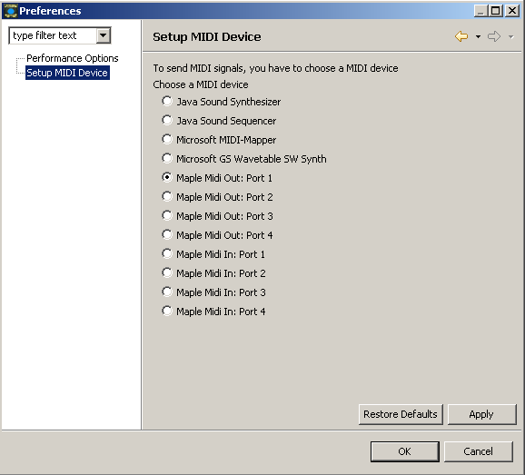
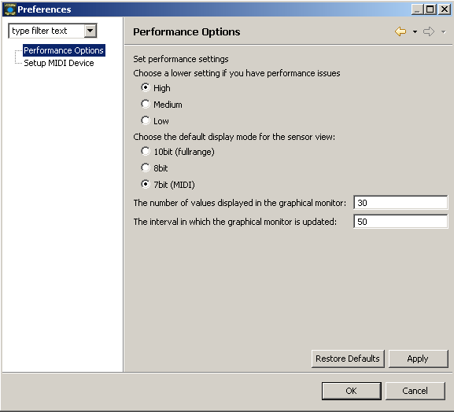

Preferences are persistently stored. This way you can configure some
important options once and they remain the same after you restart JGlove.
II MIDI Options

Image: MIDI Options
You can choose one of the MIDI devices presented. If you want to
connect to another program like Cubase, Reason etc. you need
a software that works as a virtual midi cable.
If you want to control a hardware sequencer, you need to select
the port on which the hardware is connected. If you are not sure
about the port, select one and click apply to test if the port is
available. Otherwise, you get an error message.
Remember to turn the global MIDI switch on before trying to send
midi messages. See MIDI configuration
for details.
III Performance Options

Image: Performance Options
Here you can set some options that can affect the performance.
General performance
By reducing the general performance setting, you get a lower
cpu usage in exchange for slower updates of the hardware.
To be more precise, the interval between two updates of the GloveBox
is changed here:
"High" is an interval of 1ms, "Medium" is 10ms, "Low" is 50ms.
With the low setting, you can observe a slight jerking of the
bars that show the sensor values. When other software needs to run
smoothly, this maybe accetable.
Sensor Setup display mode
In the Sensor Setup, you can choose how to display the values.
Instead of changing this setting each time, you can set a default here.
Graphical monitor settings
You can configure the graphical monitor. When you click on Apply or OK, the
graphical monitor is updated and set to the new values.
See Monitor for examples of different settings.